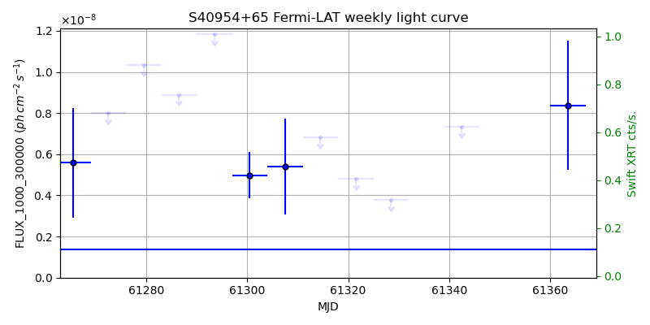

LAT Lightcurve site: https://fermi.gsfc.nasa.gov/ssc/data/access/lat/msl_lc/source/S4_0954p65
Swift site: https://www.swift.psu.edu/monitoring/source.php?source=0954+658
NED: Query
Time of last update of this page: UT: 2026-11-28 16:21 (MJD: 61372.682)
| Property | Value |
|---|---|
| R.A. | 9:58:47.28 |
| Dec. | 65:33:54.0 |
| z | 0.369 |
| 3FGL SpectrumType | PowerLaw |
| 3FGL PL Index | 2.38 |
| 3FGL Flux_100_300000 | 3.33e-08 1 / (s cm2) |
| 3FGL Flux_1000_300000 | 1.38e-09 1 / (s cm2) |
| 3FGL Flux >200 GeV | 9.14e-13 1 / (s cm2) |
| 3FGL Extrap. Crab >200 GeV | 0.00 |
| 3FGL Flux After EBL Absorption >200GeV | 2.40e-13 1 / (s cm2) |
| 3FGL EBL Crab Fraction >200GeV | 0.00 |
| MJD | dMJD | Flux | dFlux | Frac3FGL | FracCrab>200GeV | EBLFracCrab>200GeV |
|---|---|---|---|---|---|---|
| 61367.50 | 0.50 | 3.14e-07 | 0.00e+00 | 0.00 | 0.00 | 0.00 |
| 61368.50 | 0.50 | 6.80e-08 | 0.00e+00 | 0.00 | 0.00 | 0.00 |
| 61369.50 | 0.50 | 2.40e-07 | 0.00e+00 | 0.00 | 0.00 | 0.00 |
| 61370.50 | 0.50 | 2.98e-07 | 0.00e+00 | 0.00 | 0.00 | 0.00 |
| 61371.50 | 0.50 | 3.81e-07 | 0.00e+00 | 0.00 | 0.00 | 0.00 |

| MJD | dMJD | Flux | dFlux | Frac3FGL | FracCrab>200GeV | EBLFracCrab>200GeV |
|---|---|---|---|---|---|---|
| 61335.50 | 3.50 | 5.74e-08 | 2.35e-08 | 1.73 | 0.01 | 0.00 |
| 61342.50 | 3.50 | 7.32e-08 | 0.00e+00 | 0.00 | 0.00 | 0.00 |
| 61349.50 | 3.50 | 7.88e-08 | 0.00e+00 | 0.00 | 0.00 | 0.00 |
| 61356.50 | 3.50 | 9.59e-08 | 0.00e+00 | 0.00 | 0.00 | 0.00 |
| 61363.50 | 3.50 | 1.18e-07 | 2.59e-08 | 3.56 | 0.01 | 0.00 |

| MJD | dMJD | Flux | dFlux | Frac3FGL | FracCrab>200GeV | EBLFracCrab>200GeV |
|---|---|---|---|---|---|---|
| 61367.50 | 0.50 | 7.72e-09 | 0.00e+00 | 0.00 | 0.00 | 0.00 |
| 61368.50 | 0.50 | 2.15e-08 | 0.00e+00 | 0.00 | 0.00 | 0.00 |
| 61369.50 | 0.50 | 1.76e-08 | 0.00e+00 | 0.00 | 0.00 | 0.00 |
| 61370.50 | 0.50 | 3.86e-08 | 0.00e+00 | 0.00 | 0.00 | 0.00 |
| 61371.50 | 0.50 | 2.09e-08 | 0.00e+00 | 0.00 | 0.00 | 0.00 |

| MJD | dMJD | Flux | dFlux | Frac3FGL | FracCrab>200GeV | EBLFracCrab>200GeV |
|---|---|---|---|---|---|---|
| 61335.50 | 3.50 | 1.27e-08 | 0.00e+00 | 0.00 | 0.00 | 0.00 |
| 61342.50 | 3.50 | 7.32e-09 | 0.00e+00 | 0.00 | 0.00 | 0.00 |
| 61349.50 | 3.50 | 1.41e-08 | 0.00e+00 | 0.00 | 0.00 | 0.00 |
| 61356.50 | 3.50 | 1.40e-08 | 0.00e+00 | 0.00 | 0.00 | 0.00 |
| 61363.50 | 3.50 | 8.38e-09 | 3.14e-09 | 6.08 | 0.02 | 0.01 |
--------------------------------------------------------- Using user-supplied coords: 9:58:47.28 65:33:54.0 2000 --------------------------------------------------------- FLWO UT night of: 2026-11-29 Local Sid. @ Midnight: 04:08 Sunset (-15.0) (local, UT): 18:31 01:31 Sunrise (-15.0) (local, UT): 05:53 12:53 Moonrise (local, UT): 21:57 04:57 Moonset (local, UT): Moon phase: 0.72 --------------------------------------------------------- AzTime LSID UT Obj_el Obj_az Mn_el Mn_az Sep. --------------------------------------------------------- 18:31 22:39 01:31 7.5 4.0 -32.9 32.1 48.3 19:01 23:09 02:01 8.1 7.1 -29.4 38.9 48.3 19:31 23:39 02:31 9.1 10.1 -25.4 45.0 48.4 20:01 00:09 03:01 10.3 13.0 -21.0 50.6 48.4 20:31 00:39 03:31 11.9 15.7 -16.2 55.6 48.4 21:01 01:09 04:01 13.8 18.3 -11.1 60.2 48.4 21:31 01:39 04:31 15.9 20.7 -5.4 64.5 48.4 22:01 02:09 05:01 18.3 22.8 0.4 68.5 48.5 22:31 02:39 05:31 20.8 24.7 5.8 72.2 48.5 23:01 03:10 06:01 23.6 26.3 11.6 75.8 48.5 23:31 03:40 06:31 26.5 27.6 17.5 79.4 48.6 00:01 04:10 07:01 29.5 28.5 23.6 82.9 48.6 00:31 04:40 07:31 32.6 29.1 29.7 86.5 48.6 01:01 05:10 08:01 35.7 29.2 35.8 90.3 48.7 01:31 05:40 08:31 38.8 28.9 42.0 94.4 48.7 02:01 06:10 09:01 41.9 28.1 48.1 99.1 48.8 02:31 06:40 09:31 44.8 26.7 54.2 104.7 48.9 03:01 07:10 10:01 47.6 24.6 60.1 111.7 48.9 03:31 07:40 10:31 50.1 21.8 65.6 121.1 49.0 04:01 08:10 11:01 52.3 18.3 70.5 134.7 49.1 04:31 08:40 11:31 54.1 14.0 74.0 154.7 49.2 05:01 09:11 12:01 55.4 9.1 75.2 181.1 49.3 05:31 09:41 12:31 56.1 3.7 73.6 206.8 49.4 05:53 10:02 12:53 56.3 359.6 71.0 221.2 49.4 --------------------------------------------------------- Dark hours >55 deg.: 0.00